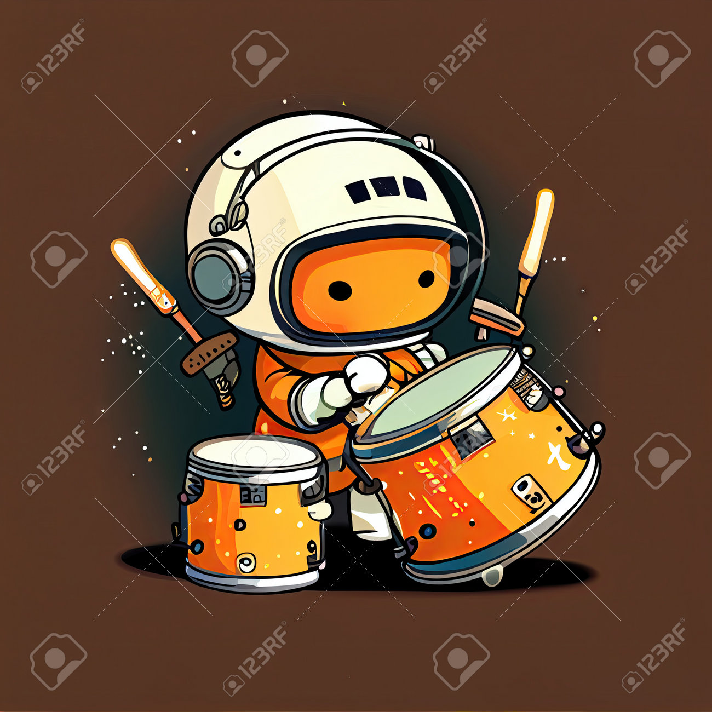

Don Musician
Don Musician is a dark hero, whose name is feared by many and praised by many more. He helps the needy and
deminshes the greedy. There is an into song for him to "Don Bhajaye dool, dushman ke sine mai Hole-with background music"
- Don Musician can play any kind of muic and has a spesality to manipulte instrument music and use it as a weapon.
- His special instrument is a 4 feet Dhol with two sided, one side half the other and the smaller side emits sharper tones.
- He saves the people of his city with the gift he has and mailntains peace and integrity of the town.
- No matter whow harsh the situation or condition may be, Don never gives up. He stands on his word and music is his life
